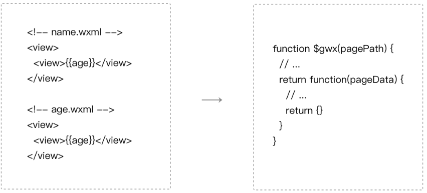

from developers.weixin.qq.com:
WXML（WeiXin Markup Language）是小程序框架设计的一套标签语言，用于构建出页面的结构。小程序的渲染层的运行环境是一个WebView，而WebView无法直接理解WXML标签，所以需要经过编译。
微信开发者工具内置了一个二进制的WXML编译器，这个编译器接受WXML代码文件列表，处理完成之后输出JavaScript代码，这段代码是各个页面的结构生成函数。

图9-3 WXML的编译过程
编译过程将所有的WXML代码最终变成一个JavaScript 函数，预先注入在WebView中。
在运行时确定了页面路径之后，将路径作为参数传递给这个函数得到该页面的结构生成函数，页面结构生成函数接受页面数据，输出一段描述页面结构的JSON，最终通过小程序组件系统生成对应的HTML。
代码清单10-1 如何使用页面结构生成函数
//$gwx 是WXML编译后得到的函数
//根据页面路径获取页面结构生成函数
var generateFun = $gwx('name.wxml')
//页面结构生成函数接受页面数据，得到描述页面结构的JSON
var virtualTree = generateFun({
name: 'miniprogram'
})
/** virtualTree == {
tag: 'view'，
children: [{
tag: 'view',
children: ['miniprogram']
}]
}**/
//小程序组件系统在虚拟树对比后将结果渲染到页面上
virtualDom.render(virtualTree)
上传代码时，微信开发者工具直接将本地的WXML代码文件提交到后台，由后台进行WXML编译，后台的WXML编译器和开发者工具本地内置的WXML编译器是同一套代码生成的。